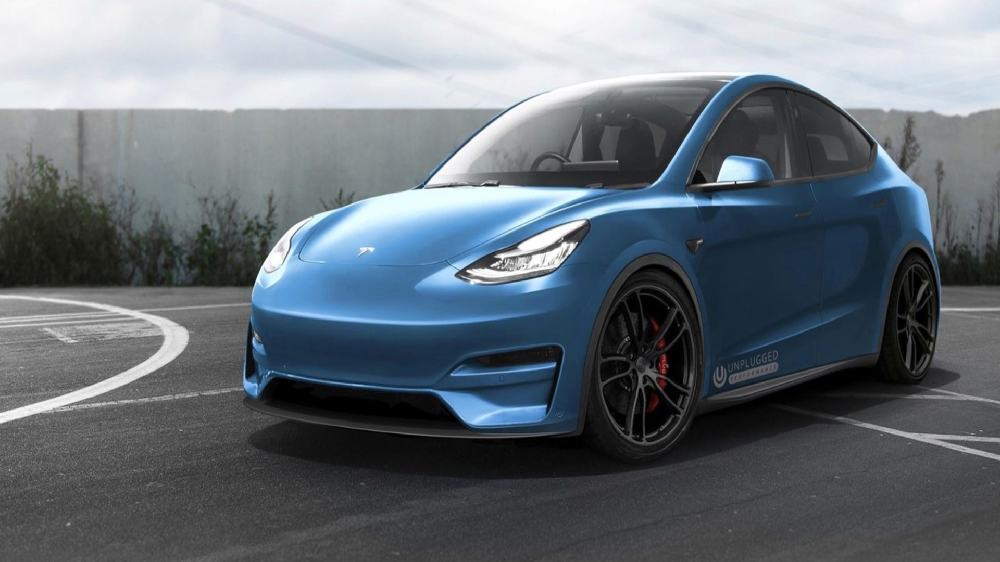
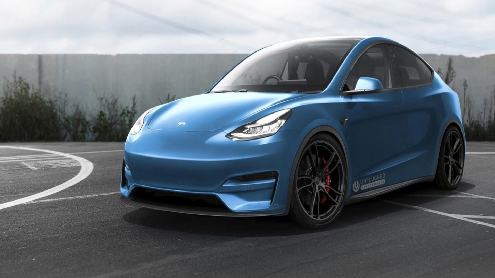
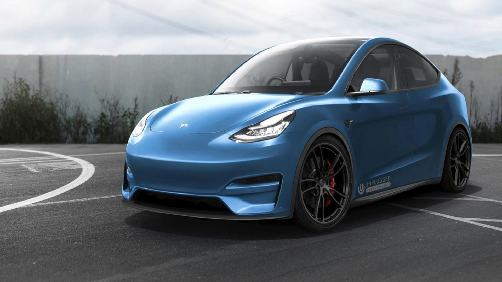

Tesla Model Y este un vehicul utilitar electric compact (CUV), în curs de dezvoltare de Tesla, Inc.
A fost dezvăluit în martie 2019, cu livrări planificate să înceapă în vara anului 2020.
Este al doilea vehicul bazat pe platforma Model 3 sedan.
Modelul Y va oferi scaune opționale in al treilea rând pentru o capacitate de șapte persoane.
